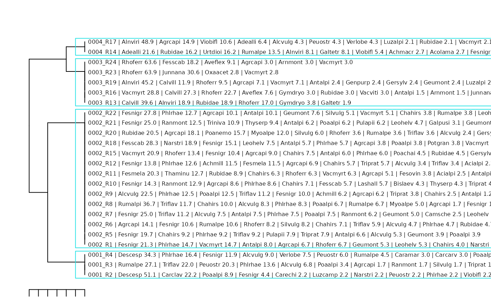

TUTORIAL_4_Quick_classification_and_interpretation
Source:vignettes/TUTORIAL_4_Quick_classification_and_interpretation.Rmd
TUTORIAL_4_Quick_classification_and_interpretation.RmdThe iPastoralist wrappers provide an optional shortcut
for inspecting vegetation groups together with the ten most abundant
species beside each survey. This can help reveal changes in species
composition along the dendrogram and give each group an initial
ecological interpretation.
Two functions are available: plotClustAggregate_twspn()
for a TWINSPAN classification, illustrated here with phytosociological
cover data, and plotClustAggregate() for agglomerative
clustering, illustrated with point-quadrat data.
With aggregate = TRUE, both functions retain individual
surveys as leaves, prefix their labels with group identifiers, draw
rectangles around groups, and return a table describing group
composition. Here, aggregation refers to the group summaries; surveys
remain visible in the dendrogram.
Before running the examples
These examples complement the phytosociological and pastoral classification vignettes. Run each section after preparing the inputs in the corresponding workflow. The code is shown without automatic execution because it uses those existing objects and includes file export.
Use a version of iPastoralist containing the wrappers
and their helper functions. The TWINSPAN wrapper also requires
ecan::twinspan().
library(iPastoralist)
#> Registered S3 method overwritten by 'vegan':
#> method from
#> rev.hclust dendextend
data_example <- as.data.frame(iPastoralist::data)
vegetation <- data_example[, c(2, 7:ncol(data_example))]
sra <- vegetation_abundance(
database = vegetation,
method = "SRA_fo"
)
# For subsequent analyses: rows = surveys; columns = species.
veg <- t(as.matrix(sra))In both sections, veg is a numeric matrix with
surveys in rows and species in columns, with unique
survey and species names. Its meaning depends on the workflow:
percentage cover for phytosociological surveys and SRA for the
point-quadrat example. The object n.cluster is the chosen
number of groups.
Two arguments control how many species are reported:
| Argument | Meaning | Value used here |
|---|---|---|
nspePlot |
Species appended to each survey label, ranked by abundance within that survey | 10 |
aggr.Nspe |
Species reported for each group, ranked by mean abundance across its surveys | 10 |
The first ten species beside a survey and the first ten species in a group summary describe different levels of the data. Both settings can be reduced independently when shorter labels or summaries are useful.
Phytosociological surveys: TWINSPAN
phyto_groups <- plotClustAggregate_twspn(
dbClust = veg,
nspePlot = 10,
aggregate = TRUE,
aggr.Nspe = 3,
modified = TRUE,
n_clusters = 4,
cut_levels = c(1, 2, 2, 40),
min_size = 2,
max_depth = 6,
polish = "hill",
species = FALSE,
labels.cex = 0.5,
clust.mar = c(1, 2, 2, 30),
save.file = FALSE,
display = TRUE
)
knitr::kable(phyto_groups)| group | name |
|---|---|
| 1 | Descesp (28%), Phlrhae (11%), Rumalpe (11%) |
| 2 | Fesnigr (14%), Phlrhae (8%), Agrcapi (7%) |
| 3 | Rhoferr (35%), Calvill (16%), Alnviri (13%) |
| 4 | Alnviri (29%), Adealli (14%), Rubidae (9%) |
# Actual number of groups and survey membership in dendrogram order.
attr(phyto_groups, "n.clusters")
#> [1] 4
attr(phyto_groups, "survey.order")
#> Survey cluster Survey.order path depth
#> 1 R2 1 1 00 2
#> 2 R3 1 2 00 2
#> 3 R4 1 3 00 2
#> 4 R1 2 4 01 2
#> 5 R5 2 5 01 2
#> 6 R6 2 6 01 2
#> 7 R7 2 7 01 2
#> 8 R8 2 8 01 2
#> 9 R9 2 9 01 2
#> 10 R10 2 10 01 2
#> 11 R11 2 11 01 2
#> 12 R12 2 12 01 2
#> 13 R15 2 13 01 2
#> 14 R18 2 14 01 2
#> 15 R20 2 15 01 2
#> 16 R21 2 16 01 2
#> 17 R22 2 17 01 2
#> 18 R13 3 18 10 2
#> 19 R16 3 19 10 2
#> 20 R19 3 20 10 2
#> 21 R23 3 21 10 2
#> 22 R24 3 22 10 2
#> 23 R14 4 23 11 2
#> 24 R17 4 24 11 2
# Mean species cover within each group, including absences as zeros.
attr(phyto_groups, "mean.abundance")
#> Achmacr Achmill Achmosc Acialpi Acolama Adealli Agrcapi Ajupyra Alcalpi
#> 1 0.000000 0.000000 0 0.0000000 0.000000 0.0000 1.062484 0 0
#> 2 0.000000 1.267447 0 0.3450354 0.000000 0.0000 6.640888 0 0
#> 3 0.000000 0.000000 0 0.0000000 0.000000 0.0000 2.034632 0 0
#> 4 1.351351 0.000000 0 0.0000000 1.351351 14.0023 7.446809 0 0
#> Alcpent Alcvulg Alnviri Angsylv Antdioi Antvuln Antalpi Araalpi
#> 1 0.00000000 5.244962 0.00000 0 0 0 0.0000000 0
#> 2 0.08928571 3.868592 0.00000 0 0 0 4.3660383 0
#> 3 0.00000000 0.000000 12.82120 0 0 0 0.7792208 0
#> 4 0.00000000 2.127660 28.52214 0 0 0 0.0000000 0
#> Aracili Arnmont Astmino Aveflex Bislaev Botluna Calvill Camsche
#> 1 0 0.0000000 0 0.0000000 0.0000000 0 0.00000 0.0000000
#> 2 0 0.0000000 0 0.3086329 0.3882243 0 0.00000 0.5534839
#> 3 0 0.9090909 0 3.3333333 0.0000000 0 15.76003 0.0000000
#> 4 0 0.0000000 0 0.0000000 0.0000000 0 0.00000 0.0000000
#> Capburs Caramar Carrese Cardefl Carclav Carechi Carorni Carpall
#> 1 0 0.9950249 0 0.0000000 7.407407 0.7407407 0 0
#> 2 0 0.0000000 0 0.4582169 0.000000 0.0000000 0 0
#> 3 0 0.0000000 0 0.0000000 0.000000 0.0000000 0 0
#> 4 0 0.0000000 0 0.0000000 0.000000 0.0000000 0 0
#> Carsemp Carcarv Cennerv Cerarve Cervulg Chahirs Chebonu Coeviri
#> 1 0.0000000 0.9950249 0 0.0000000 0.0000000 0.000000 0 0
#> 2 0.2287559 0.0000000 0 0.4555124 0.1785714 4.693102 0 0
#> 3 0.0000000 0.0000000 0 0.0000000 0.0000000 0.000000 0 0
#> 4 0.0000000 0.0000000 0 0.0000000 0.0000000 0.000000 0 0
#> Croalbi Crycris Cusepit Dapmeze Descesp Dryaffi Epialpe Epiangu
#> 1 0 0 0.0000000 0.0000000 28.47982311 0 0 0
#> 2 0 0 0.0952381 0.1066098 0.08928571 0 0 0
#> 3 0 0 0.0000000 0.0000000 0.00000000 0 0 0
#> 4 0 0 0.0000000 0.0000000 0.00000000 0 0 0
#> Epicoll Erialpi Eupcypa Eupmini Fesovin Fesmela Fesnigr Fesscab
#> 1 0 0 0.0000000 0 0.0000000 0.000000 5.461581 0.000000
#> 2 0 0 0.3805561 0 0.2712477 2.369713 14.004280 2.694592
#> 3 0 0 0.0000000 0 0.0000000 0.000000 0.000000 3.636364
#> 4 0 0 0.0000000 0 0.0000000 0.000000 1.351351 0.000000
#> Foualpi Gallada Galtetr Galpusi Genacau Genpurp Genramo Gersylv
#> 1 0 0 0.0000000 0.0000000 0 0.0000000 0 0.0000000
#> 2 0 0 0.3231293 0.3874179 0 0.0000000 0 0.5534039
#> 3 0 0 0.3773585 0.0000000 0 0.4761905 0 0.4761905
#> 4 0 0 4.0540541 0.0000000 0 0.0000000 0 0.0000000
#> Geumont Geuriva Gymdryo Hielact Hievill Hiemuro Hipcomo Homalpi
#> 1 0.0000000 0.00000000 0.00000000 0 0 0.00000000 0 0
#> 2 2.1651149 0.08605852 0.08403361 0 0 0.09041591 0 0
#> 3 0.4761905 0.00000000 1.36077759 0 0 0.00000000 0 0
#> 4 0.0000000 0.00000000 0.00000000 0 0 0.00000000 0 0
#> Junmona Junnana Lardeci Lashall Leohelv Leuvulg Lilmart Lotalpi
#> 1 0 0.000000 0 0.0000000 0.000000 0 0 0.0000000
#> 2 0 0.000000 0 0.4081633 1.614261 0 0 0.4095435
#> 3 0 6.414141 0 0.0000000 0.000000 0 0 0.0000000
#> 4 0 0.000000 0 0.0000000 0.000000 0 0 0.0000000
#> Luzalpi Luzcamp Luzsylv Molarun Myoalpe Narstri Oxaacet Parlili
#> 1 0.0000000 0.7407407 0.0000000 0 0.000000 0.7407407 0.0000000 0
#> 2 0.0000000 0.0000000 0.0000000 0 2.041705 1.7190169 0.0000000 0
#> 3 0.4761905 0.0000000 0.4761905 0 0.000000 0.0000000 0.5555556 0
#> 4 1.0638298 0.0000000 0.0000000 0 0.000000 0.0000000 0.0000000 0
#> Pedtube Peuostr Pheconn Phlrhae Phybeto Phyhemi Poaalpi Poachai
#> 1 0 9.510452 0 10.733152 0.0000000 0 5.0879313 0.0000000
#> 2 0 0.000000 0 7.694231 0.0952381 0 3.1656208 0.6521003
#> 3 0 0.000000 0 0.000000 0.0000000 0 0.4761905 0.0000000
#> 4 0 2.127660 0 0.000000 0.0000000 0 0.0000000 0.0000000
#> Poanemo Poaprat Pollonc Potaure Potgran Prihirs Psealbi Pulapii
#> 1 0.000000 0.0000000 0.00000000 0 0.0000000 0 0 0.000000
#> 2 1.413258 0.2011494 0.08605852 0 0.6580243 0 0 1.200982
#> 3 0.000000 0.0000000 0.00000000 0 0.0000000 0 0 0.000000
#> 4 0.000000 0.0000000 0.00000000 0 0.0000000 0 0 0.000000
#> Ranmont Rhialec Rhorose Rhoferr Rospend Rubidae Rumalpe Rumalpi
#> 1 0.5649718 0.0000000 0 0.000000 0 0.000000 10.5320853 0.000000
#> 2 3.0901061 0.3792965 0 2.898373 0 2.751870 2.0517968 2.619048
#> 3 0.0000000 0.0000000 0 35.351493 0 4.379646 0.4761905 0.000000
#> 4 0.0000000 0.0000000 0 0.000000 0 9.171938 6.7567568 0.000000
#> Rumscut Saxaspe Saxrotu Saxstel Scacolu Sedanac Semarac Semgran
#> 1 0.0000000 0 0.000000 0 0.00000000 0.0000000 0 0
#> 2 0.3489922 0 0.000000 0 0.08605852 0.3497938 0 0
#> 3 0.0000000 0 0.000000 0 0.00000000 0.0000000 0 0
#> 4 0.0000000 0 1.351351 0 0.00000000 0.0000000 0 0
#> Semmont Sendoro Senovat Sesliba Silnuta Silrupe Silvulg Solalpi
#> 1 0.0000000 0 0 0.0000000 0 0.0000000 0.5649718 0.0000000
#> 2 0.1020408 0 0 0.1020408 0 0.3227408 1.6712022 0.5699405
#> 3 0.0000000 0 0 0.0000000 0 0.0000000 0.0000000 0.0000000
#> 4 0.0000000 0 0 0.0000000 0 0.0000000 0.0000000 0.0000000
#> Solminu Soraucu Taroffi Thafoet Thaminu Thealpi Thyserp Trialpi
#> 1 0.0000000 0 0 0.0000000 0.0000000 0 0.0000000 0
#> 2 0.4517052 0 0 0.1725177 0.9862609 0 0.9757653 0
#> 3 0.0000000 0 0 0.0000000 0.0000000 0 0.0000000 0
#> 4 0.0000000 0 0 0.0000000 0.0000000 0 0.0000000 0
#> Tribadi Triniva Tripall Triprat Trirepe Triflav Troeuro Urtdioi
#> 1 0 0.00000 0.0000000 0.5649718 0.0000000 7.344633 0 0.000000
#> 2 0 0.78125 0.1116071 1.7269698 0.1797016 4.310462 0 0.000000
#> 3 0 0.00000 0.0000000 0.0000000 0.0000000 0.000000 0 0.000000
#> 4 0 0.00000 0.0000000 0.0000000 0.0000000 0.000000 0 8.108108
#> Vacgaul Vacmyrt Vacviti Verlobe Vercham Verserp Viobifl
#> 1 0.0000000 0.000000 0.0000000 2.487562 0.0000000 0 0.7407407
#> 2 0.0952381 3.623441 0.0000000 0.000000 0.1642036 0 0.1753442
#> 3 0.0000000 8.347763 0.6060606 0.000000 0.0000000 0 0.0000000
#> 4 0.0000000 1.063830 0.0000000 2.127660 0.0000000 0 8.0218516Point-quadrat surveys: agglomerative clustering
Use the SRA matrix veg and the ranked-species table
first10 prepared in the pastoral workflow. The table must
contain the matching survey identifiers, Survey.order, and
at least ten ranked-species columns, as returned by
first_ten_species(..., join.dendrogram = TRUE, cluster.hclust = clst).
The argument is spelled firt10 in the wrapper.
The following example uses Bray-Curtis dissimilarity and average
linkage (UPGMA). It computes that classification from veg;
its groups may differ from a chord-distance classification explored
earlier. Choose the number of groups for the classification being
displayed.
pq_groups <- plotClustAggregate(
dbClust = veg,
nspePlot = 10,
distance = "chord",
clust.method = "average",
aggregate = TRUE,
n.clust = 4,
aggr.Nspe = 10,
labels.cex = 0.5,
clust.mar = c(1, 2, 2, 30),
file.name = "point_quadrat_groups.pdf",
file.height = 12,
file.width = 24,
save.file = F,
format = "pdf"
)
knitr::kable(pq_groups)| group | name |
|---|---|
| 1 | Fesnigr (13%), Phlrhae (8%), Agrcapi (6%), Triflav (5%), Chahirs (4%), Antalpi (4%), Alcvulg (4%), Rumalpe (4%), Vacmyrt (3%), Poaalpi (3%) |
| 2 | Descesp (43%), Carclav (11%), Phlrhae (9%), Fesnigr (8%), Poaalpi (6%), Alcvulg (4%), Peuostr (4%), Verlobe (4%), Rumalpe (2%), Caramar (1%) |
| 3 | Rhoferr (42%), Calvill (17%), Vacmyrt (9%), Junnana (8%), Rubidae (5%), Alnviri (5%), Fesscab (5%), Aveflex (4%), Gymdryo (2%), Arnmont (1%) |
| 4 | Alnviri (34%), Adealli (9%), Agrcapi (7%), Rubidae (6%), Urtdioi (5%), Viobifl (5%), Rumalpe (5%), Calvill (4%), Rhoferr (3%), Vacmyrt (3%) |
Open aggregate_point_quadrat_groups.pdf in the working
directory to inspect the groups and their survey labels. With the
supplied implementation, save.file = FALSE computes the
summary without drawing the grouped dendrogram, so file export is used
here to view it.
The ranked species beside each survey report SRA, while the returned
group and name columns describe the ten
species with the highest mean SRA in each group. The wrapper recomputes
clustering from the input matrix; the order stored in
first10 does not supply an existing tree.
Reading the overview
Use the species appended to survey labels to inspect compositional variation within and between groups. Use the returned group summaries to identify the species contributing most strongly to mean composition. These abundance rankings do not measure species fidelity or statistical significance; diagnostic species require the corresponding analyses.
Group means include zero values for species absent from a survey. The
summary text rounds means to whole numbers and appends a percent sign,
without converting the input values to percentages. Use percentage cover
or percentage SRA when interpreting those labels. Very small positive
means may be displayed as 0%, and zero-mean species can
occur at the end of a summary if fewer than ten species have positive
means.
Ten species can make survey labels long. Increase the output width or
right margin, or set nspePlot = 5 while keeping
aggr.Nspe = 10 to retain a fuller group summary with a more
compact dendrogram.